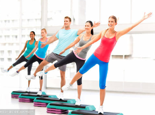

选择运动着装时注意事项
既吸汗又透气。很多人运动时会穿纯棉服装。
其实，纯棉质地吸汗效果好，但透气性差，
夏季运动时穿着容易导致中暑，秋季则可能使人感冒受凉。
建议无论是外衣还是内衣，最好都选择透气散湿性相对较好的聚丙烯材质。
运动时不要穿过紧、过厚重的衣服，要以轻便为主。
否则不仅有碍运动，还有可能造成不必要的挫伤，或是导致血液循环不畅。

比如，打篮球时，衣服要宽松，领口和袖口要宽大；

跳广场舞、健身操时，衣服要保证有弹性；
做器械运动时，可以选择弹力背心和宽松的短裤。
此外，有些运动需要特殊的防护装备。
比如游泳时，要戴合适的泳镜和泳帽。
泳镜可以避免泳池内的化学物质伤害眼睛，泳帽则可以防止耳震，还能保护头部；
骑自行车时别忘了戴头盔，可以在发生意外的时候起到缓冲的作用，有效降低外界对头部的伤害；
推举杠铃、哑铃时，最好配上护腕、腰板带等。